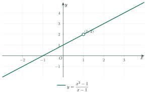

Limits of FunctionsGiới hạn của hàm số
Grade 11 · Topic: Limits and ContinuityLớp 11 · Chủ đề: Giới hạn. Hàm số liên tục
1Lesson IntroductionGiới thiệu bài học
Learning goalsMục tiêu bài học
By the end of this lesson you can:
Sau bài học này, em có thể:
find the limit of a function at a point and at infinity;
tìm giới hạn của hàm số tại một điểm và tại vô cực;
remove the indeterminate form \(\dfrac00\) by factorising or using the conjugate;
khử dạng vô định \(\dfrac00\) bằng cách phân tích thành nhân tử hoặc nhân liên hợp;
use one-sided limits and decide whether a limit exists;
dùng giới hạn một phía và xét sự tồn tại của giới hạn;
recognise infinite limits and use limits in real models.
nhận biết giới hạn vô cực và vận dụng vào mô hình thực tế.
2Mathematical VocabularyTừ vựng Toán học
limit of a function – \(\lim\limits_{x\to x_0}f(x)=L\): \(f(x)\) gets as close to \(L\) as we like when \(x\) is close enough to \(x_0\) (\(x\ne x_0\)).
giới hạn của hàm số – \(\lim\limits_{x\to x_0}f(x)=L\): \(f(x)\) gần \(L\) tùy ý khi \(x\) đủ gần \(x_0\) (\(x\ne x_0\)).
one-sided limit – the limit when \(x\) approaches \(x_0\) only from the right (\(x_0^+\)) or only from the left (\(x_0^-\)).
giới hạn một phía – giới hạn khi \(x\) dần tới \(x_0\) chỉ từ bên phải (\(x_0^+\)) hoặc chỉ từ bên trái (\(x_0^-\)).
indeterminate form – an expression like \(\dfrac00\) or \(\dfrac\infty\infty\) whose limit cannot be read off directly.
dạng vô định – biểu thức dạng \(\dfrac00\), \(\dfrac\infty\infty\)… chưa thể kết luận ngay giới hạn.
factorise – write a polynomial as a product, e.g. \(x^2-1=(x-1)(x+1)\).
phân tích thành nhân tử – viết đa thức thành tích, ví dụ \(x^2-1=(x-1)(x+1)\).
approach (tend to) – \(x\to x_0\): \(x\) takes values closer and closer to \(x_0\).
dần tới – \(x\to x_0\): \(x\) nhận các giá trị ngày càng gần \(x_0\).
concentration – amount of substance per unit volume, e.g. grams per litre.
nồng độ – lượng chất trong một đơn vị thể tích, ví dụ gam trên lít.
3Useful English PhrasesCụm từ tiếng Anh thường gặp
Find the limit of the function as \(x\) tends to 1.
Tìm giới hạn của hàm số khi \(x\) dần tới 1.
The limit has the form zero over zero.
Giới hạn có dạng 0 chia 0.
Factorise and simplify.
Phân tích thành nhân tử và rút gọn.
The left-hand and right-hand limits are different.
Giới hạn bên trái và bên phải khác nhau.
The limit does not exist.
Giới hạn không tồn tại.
4Prerequisite ReviewÔn tập kiến thức nền
From Bài 15: \(\lim\dfrac1{n^k}=0\); limits respect \(+,-,\times,:\); \(\dfrac{\text{number}\ne0}{\to0^+}\to\pm\infty\). Algebra: \(a^2-b^2=(a-b)(a+b)\), \(a^3-b^3=(a-b)(a^2+ab+b^2)\), \(\sqrt A-B=\dfrac{A-B^2}{\sqrt A+B}\).
Từ Bài 15: \(\lim\dfrac1{n^k}=0\); giới hạn tương thích với \(+,-,\times,:\); số khác 0 chia cho đại lượng dần tới 0 thì dần tới \(\pm\infty\). Đại số: \(a^2-b^2=(a-b)(a+b)\), \(a^3-b^3=(a-b)(a^2+ab+b^2)\), \(\sqrt A-B=\dfrac{A-B^2}{\sqrt A+B}\).
5TheoryLý thuyết
5.1 Limit at a pointGiới hạn hữu hạn tại một điểm
DefinitionĐịnh nghĩa
Let \(f\) be defined near \(x_0\) (maybe not at \(x_0\)). \(\lim\limits_{x\to x_0}f(x)=L\) if for every sequence \(x_n\to x_0\) (\(x_n\ne x_0\)) we have \(f(x_n)\to L\).
Cho \(f\) xác định trên một khoảng chứa \(x_0\) (có thể trừ \(x_0\)). \(\lim\limits_{x\to x_0}f(x)=L\) nếu với mọi dãy \(x_n\to x_0\) (\(x_n\ne x_0\)) ta có \(f(x_n)\to L\).

RulesQuy tắc
\(\lim\limits_{x\to x_0}c=c\), \(\lim\limits_{x\to x_0}x=x_0\); limits respect \(+,-,\times,:\) (denominator limit \(\ne0\)) and \(\sqrt{\ }\).
\(\lim\limits_{x\to x_0}c=c\), \(\lim\limits_{x\to x_0}x=x_0\); giới hạn tương thích với \(+,-,\times,:\) (giới hạn của mẫu khác 0) và \(\sqrt{\ }\).
Polynomials and rational functions defined at \(x_0\): just substitute \(x=x_0\).
Đa thức, phân thức xác định tại \(x_0\): thay trực tiếp \(x=x_0\).
Form \(\dfrac00\): factorise \((x-x_0)\) and cancel, or multiply by the conjugate.
Dạng \(\dfrac00\): phân tích để xuất hiện \((x-x_0)\) rồi rút gọn, hoặc nhân liên hợp.
One-sided limitsGiới hạn một phía
\(\lim\limits_{x\to x_0^+}f(x)\) uses only \(x\gt x_0\); \(\lim\limits_{x\to x_0^-}f(x)\) only \(x\lt x_0\). \(\lim\limits_{x\to x_0}f(x)=L\iff\) both one-sided limits equal \(L\).
\(\lim\limits_{x\to x_0^+}f(x)\) chỉ xét \(x\gt x_0\); \(\lim\limits_{x\to x_0^-}f(x)\) chỉ xét \(x\lt x_0\). \(\lim\limits_{x\to x_0}f(x)=L\iff\) cả hai giới hạn một phía đều bằng \(L\).
5.2 Limits at infinity and infinite limitsGiới hạn tại vô cực và giới hạn vô cực
Basic factsKết quả cơ bản
\(\lim\limits_{x\to\pm\infty}\dfrac{c}{x^k}=0\); for a rational function divide by the highest power of \(x\) in the denominator.
\(\lim\limits_{x\to\pm\infty}\dfrac{c}{x^k}=0\); với phân thức, chia tử và mẫu cho lũy thừa bậc cao nhất của \(x\) ở mẫu.
\(\lim\limits_{x\to+\infty}x^k=+\infty\); \(\lim\limits_{x\to a^+}\dfrac1{x-a}=+\infty\), \(\lim\limits_{x\to a^-}\dfrac1{x-a}=-\infty\).
\(\lim\limits_{x\to+\infty}x^k=+\infty\); \(\lim\limits_{x\to a^+}\dfrac1{x-a}=+\infty\), \(\lim\limits_{x\to a^-}\dfrac1{x-a}=-\infty\).
If \(f\to L\ne0\) and \(g\to0\) with a constant sign, then \(\dfrac fg\to\pm\infty\) (sign rule).
Nếu \(f\to L\ne0\) và \(g\to0\) với dấu không đổi thì \(\dfrac fg\to\pm\infty\) (theo quy tắc dấu).
Watch out!Lưu ý
Never "cancel" before checking the form. \(\dfrac00\) is not 0 and not 1. A limit at \(x_0\) does not care about the value \(f(x_0)\).
Không rút gọn trước khi xét dạng. \(\dfrac00\) không bằng 0 cũng không bằng 1. Giới hạn tại \(x_0\) không phụ thuộc giá trị \(f(x_0)\).
6Worked ExamplesVí dụ có lời giải
ExampleVí dụ 1BasicCơ bản – SubstitutionThay trực tiếp
Find \(\lim\limits_{x\to2}(x^2+3x-1)\) and \(\lim\limits_{x\to1}\dfrac{2x+1}{x+2}\).
Tính \(\lim\limits_{x\to2}(x^2+3x-1)\) và \(\lim\limits_{x\to1}\dfrac{2x+1}{x+2}\).
Analysis: Both functions are defined at the point.
Phân tích: Cả hai hàm số đều xác định tại điểm đang xét.
\(4+6-1=9\).
\(4+6-1=9\).
\(\dfrac{2+1}{1+2}=1\).
\(\dfrac{2+1}{1+2}=1\).
\(9\) and \(1\).
\(9\) và \(1\).
ExampleVí dụ 2BasicCơ bản – Form \(\dfrac00\)Dạng \(\dfrac00\)
Find \(\lim\limits_{x\to3}\dfrac{x^2-5x+6}{x-3}\) and \(\lim\limits_{x\to0}\dfrac{\sqrt{x+4}-2}{x}\).
Tính \(\lim\limits_{x\to3}\dfrac{x^2-5x+6}{x-3}\) và \(\lim\limits_{x\to0}\dfrac{\sqrt{x+4}-2}{x}\).
Analysis: Substituting gives \(\dfrac00\): factorise / use the conjugate.
Phân tích: Thay vào được \(\dfrac00\): phân tích nhân tử / nhân liên hợp.
\(\dfrac{(x-2)(x-3)}{x-3}=x-2\to1\).
\(\dfrac{(x-2)(x-3)}{x-3}=x-2\to1\).
\(\dfrac{(x+4)-4}{x(\sqrt{x+4}+2)}=\dfrac{1}{\sqrt{x+4}+2}\to\dfrac14\).
\(\dfrac{(x+4)-4}{x(\sqrt{x+4}+2)}=\dfrac{1}{\sqrt{x+4}+2}\to\dfrac14\).
\(1\) and \(\dfrac14\).
\(1\) và \(\dfrac14\).
ExampleVí dụ 3IntermediateTrung bình – Does the limit exist?Giới hạn có tồn tại không?
\(f(x)=x^2\) for \(x\lt1\), \(f(x)=2x-3\) for \(x\ge1\). Find the one-sided limits at 1. Does \(\lim\limits_{x\to1}f(x)\) exist? What value of the constant term (instead of \(-3\)) would make it exist?
Cho \(f(x)=x^2\) khi \(x\lt1\), \(f(x)=2x-3\) khi \(x\ge1\). Tìm các giới hạn một phía tại 1. \(\lim\limits_{x\to1}f(x)\) có tồn tại không? Thay \(-3\) bằng số nào thì giới hạn tồn tại?
Analysis: Use the formula of each side.
Phân tích: Dùng công thức của từng phía.
\(\lim\limits_{x\to1^-}x^2=1\); \(\lim\limits_{x\to1^+}(2x-3)=-1\).
\(\lim\limits_{x\to1^-}x^2=1\); \(\lim\limits_{x\to1^+}(2x-3)=-1\).
\(1\ne-1\): no limit. With \(2x+c\): \(2+c=1\iff c=-1\).
\(1\ne-1\): không có giới hạn. Với \(2x+c\): \(2+c=1\iff c=-1\).
The limit does not exist; it exists if the term is \(-1\) (i.e. \(f(x)=2x-1\) for \(x\ge1\)).
Giới hạn không tồn tại; nó tồn tại nếu thay bằng \(-1\) (tức \(f(x)=2x-1\) khi \(x\ge1\)).
ExampleVí dụ 4IntermediateTrung bình – At infinity and near a vertical lineTại vô cực và gần đường thẳng đứng
Find \(\lim\limits_{x\to+\infty}\dfrac{3x^2-x}{x^2+2}\), \(\lim\limits_{x\to2^+}\dfrac{1}{x-2}\) and \(\lim\limits_{x\to2^-}\dfrac{1}{x-2}\).
Tính \(\lim\limits_{x\to+\infty}\dfrac{3x^2-x}{x^2+2}\), \(\lim\limits_{x\to2^+}\dfrac{1}{x-2}\) và \(\lim\limits_{x\to2^-}\dfrac{1}{x-2}\).
Analysis: Divide by \(x^2\); look at the sign of \(x-2\).
Phân tích: Chia cho \(x^2\); xét dấu của \(x-2\).
\(\dfrac{3-\dfrac1x}{1+\dfrac2{x^2}}\to3\).
\(\dfrac{3-\dfrac1x}{1+\dfrac2{x^2}}\to3\).
\(x\to2^+\): \(x-2\to0^+\), so \(+\infty\); \(x\to2^-\): \(x-2\to0^-\), so \(-\infty\).
\(x\to2^+\): \(x-2\to0^+\) nên \(+\infty\); \(x\to2^-\): \(x-2\to0^-\) nên \(-\infty\).
\(3\); \(+\infty\); \(-\infty\).
\(3\); \(+\infty\); \(-\infty\).
ExampleVí dụ 5AdvancedNâng cao – Salt water in a tankNước muối trong bể
A tank holds 200 l of pure water. Salt water with 30 g of salt per litre is pumped in at 4 l/min. After \(t\) minutes the concentration is \(C(t)=\dfrac{30\cdot4t}{200+4t}\) (g/l). What happens to \(C(t)\) after a very long time?
Một bể chứa 200 lít nước tinh khiết. Bơm vào bể nước muối nồng độ 30 g/l với tốc độ 4 lít/phút. Sau \(t\) phút, nồng độ muối trong bể là \(C(t)=\dfrac{30\cdot4t}{200+4t}\) (g/l). Nồng độ thay đổi thế nào sau rất lâu?
Analysis: Find \(\lim\limits_{t\to+\infty}C(t)\).
Phân tích: Tìm \(\lim\limits_{t\to+\infty}C(t)\).
\(C(t)=\dfrac{120t}{200+4t}=\dfrac{120}{\dfrac{200}t+4}\).
\(C(t)=\dfrac{120t}{200+4t}=\dfrac{120}{\dfrac{200}t+4}\).
\(\dfrac{200}{t}\to0\), so \(C(t)\to\dfrac{120}{4}=30\).
\(\dfrac{200}{t}\to0\) nên \(C(t)\to\dfrac{120}{4}=30\).
\(C(t)\to30\) g/l: the water in the tank becomes almost as salty as the water pumped in, but never more.
\(C(t)\to30\) g/l: nước trong bể ngày càng mặn gần bằng nước bơm vào, nhưng không bao giờ mặn hơn.
7PracticeBài tập luyện tập
A. Multiple ChoiceA. Trắc nghiệm nhiều lựa chọn
\(\lim\limits_{x\to2}\dfrac{x^{2}-7x+10}{x-2}=\)…
\(\lim\limits_{x\to2}\dfrac{x^{2}-7x+10}{x-2}=\)…
Answer: b. \(\dfrac{(x-2)(x-5)}{x-2}=x-5\to-3\).
Đáp án b. \(\dfrac{(x-2)(x-5)}{x-2}=x-5\to-3\).
\(\lim\limits_{x\to0}\dfrac{\sqrt{x+9}-3}{x}=\)…
\(\lim\limits_{x\to0}\dfrac{\sqrt{x+9}-3}{x}=\)…
Answer: c. Conjugate: \(\dfrac{1}{\sqrt{x+9}+3}\to\dfrac{1}{6}\).
Đáp án c. Nhân liên hợp: \(\dfrac{1}{\sqrt{x+9}+3}\to\dfrac{1}{6}\).
\(\lim\limits_{x\to+\infty}\dfrac{4x-1}{2x+3}=\)…
\(\lim\limits_{x\to+\infty}\dfrac{4x-1}{2x+3}=\)…
Answer: c. Divide by \(x^{1}\): the ratio of leading coefficients.
Đáp án c. Chia tử và mẫu cho \(x^{1}\): tỉ số các hệ số bậc cao nhất.
B. True or FalseB. Đúng hoặc sai
\(\lim\limits_{x\to1^{-}}\dfrac{3}{x-1}=+\infty\).
\(\lim\limits_{x\to1^{-}}\dfrac{3}{x-1}=+\infty\).
\(x-1\to0^{-}\) and the numerator is \(3\): the limit is \(-\infty\).
\(x-1\to0^{-}\), tử bằng \(3\): giới hạn là \(-\infty\).
\(f(x)=2x+1\) for \(x\lt2\), \(f(x)=x+3\) for \(x\ge2\). \(\lim\limits_{x\to2}f(x)\) exists.
Cho \(f(x)=2x+1\) khi \(x\lt2\), \(f(x)=x+3\) khi \(x\ge2\). Tồn tại \(\lim\limits_{x\to2}f(x)\).
Left limit \(5\), right limit \(5\).
Giới hạn trái \(5\), giới hạn phải \(5\).
C. Short AnswerC. Trả lời ngắn
Find \(\lim\limits_{x\to2}\dfrac{x^3-8}{x-2}\).
Tính \(\lim\limits_{x\to2}\dfrac{x^3-8}{x-2}\).
Enter a number.
Nhập một số.
\(x^2+2x+4\to3\cdot4=12\).
\(x^2+2x+4\to3\cdot4=12\).
A tank has \(100\) l of pure water. Salt water of \(20\) g/l is added at \(5\) l/min, so \(C(t)=\dfrac{20\cdot5 t}{100+5t}\) (g/l). Find \(\lim\limits_{t\to+\infty}C(t)\).
Bể chứa \(100\) l nước tinh khiết. Bơm vào nước muối \(20\) g/l với tốc độ \(5\) l/phút, nồng độ \(C(t)=\dfrac{20\cdot5 t}{100+5t}\) (g/l). Tính \(\lim\limits_{t\to+\infty}C(t)\).
Enter a number.
Nhập một số.
Divide by \(t\): \(\dfrac{100}{\dfrac{100}t+5}\to20\).
Chia tử và mẫu cho \(t\): \(\dfrac{100}{\dfrac{100}t+5}\to20\).
A. Multiple ChoiceA. Trắc nghiệm nhiều lựa chọn
\(\lim\limits_{x\to-1}\dfrac{x^{2}-2x-3}{x+1}=\)…
\(\lim\limits_{x\to-1}\dfrac{x^{2}-2x-3}{x+1}=\)…
Answer: b. \(\dfrac{(x+1)(x-3)}{x+1}=x-3\to-4\).
Đáp án b. \(\dfrac{(x+1)(x-3)}{x+1}=x-3\to-4\).
\(\lim\limits_{x\to0}\dfrac{\sqrt{x+25}-5}{x}=\)…
\(\lim\limits_{x\to0}\dfrac{\sqrt{x+25}-5}{x}=\)…
Answer: d. Conjugate: \(\dfrac{1}{\sqrt{x+25}+5}\to\dfrac{1}{10}\).
Đáp án d. Nhân liên hợp: \(\dfrac{1}{\sqrt{x+25}+5}\to\dfrac{1}{10}\).
\(\lim\limits_{x\to-\infty}\dfrac{-6x^{2}+1}{3x^{2}+2x-1}=\)…
\(\lim\limits_{x\to-\infty}\dfrac{-6x^{2}+1}{3x^{2}+2x-1}=\)…
Answer: d. Divide by \(x^{2}\): the ratio of leading coefficients.
Đáp án d. Chia tử và mẫu cho \(x^{2}\): tỉ số các hệ số bậc cao nhất.
B. True or FalseB. Đúng hoặc sai
\(\lim\limits_{x\to-2^{+}}\dfrac{5}{x+2}=+\infty\).
\(\lim\limits_{x\to-2^{+}}\dfrac{5}{x+2}=+\infty\).
\(x+2\to0^{+}\) and the numerator is \(5\): the limit is \(+\infty\).
\(x+2\to0^{+}\), tử bằng \(5\): giới hạn là \(+\infty\).
\(f(x)=3x-2\) for \(x\lt1\), \(f(x)=x+2\) for \(x\ge1\). \(\lim\limits_{x\to1}f(x)\) exists.
Cho \(f(x)=3x-2\) khi \(x\lt1\), \(f(x)=x+2\) khi \(x\ge1\). Tồn tại \(\lim\limits_{x\to1}f(x)\).
Left limit \(1\), right limit \(3\).
Giới hạn trái \(1\), giới hạn phải \(3\).
C. Short AnswerC. Trả lời ngắn
Find \(\lim\limits_{x\to-1}\dfrac{x^3+1}{x+1}\).
Tính \(\lim\limits_{x\to-1}\dfrac{x^3+1}{x+1}\).
Enter a number.
Nhập một số.
\(x^2-1x+1\to3\cdot1=3\).
\(x^2-1x+1\to3\cdot1=3\).
A tank has \(500\) l of pure water. Salt water of \(40\) g/l is added at \(10\) l/min, so \(C(t)=\dfrac{40\cdot10 t}{500+10t}\) (g/l). Find \(\lim\limits_{t\to+\infty}C(t)\).
Bể chứa \(500\) l nước tinh khiết. Bơm vào nước muối \(40\) g/l với tốc độ \(10\) l/phút, nồng độ \(C(t)=\dfrac{40\cdot10 t}{500+10t}\) (g/l). Tính \(\lim\limits_{t\to+\infty}C(t)\).
Enter a number.
Nhập một số.
Divide by \(t\): \(\dfrac{400}{\dfrac{500}t+10}\to40\).
Chia tử và mẫu cho \(t\): \(\dfrac{400}{\dfrac{500}t+10}\to40\).
A. Multiple ChoiceA. Trắc nghiệm nhiều lựa chọn
\(\lim\limits_{x\to4}\dfrac{x^{2}-2x-8}{x-4}=\)…
\(\lim\limits_{x\to4}\dfrac{x^{2}-2x-8}{x-4}=\)…
Answer: a. \(\dfrac{(x-4)(x+2)}{x-4}=x+2\to6\).
Đáp án a. \(\dfrac{(x-4)(x+2)}{x-4}=x+2\to6\).
\(\lim\limits_{x\to0}\dfrac{\sqrt{x+4}-2}{x}=\)…
\(\lim\limits_{x\to0}\dfrac{\sqrt{x+4}-2}{x}=\)…
Answer: c. Conjugate: \(\dfrac{1}{\sqrt{x+4}+2}\to\dfrac{1}{4}\).
Đáp án c. Nhân liên hợp: \(\dfrac{1}{\sqrt{x+4}+2}\to\dfrac{1}{4}\).
\(\lim\limits_{x\to+\infty}\dfrac{5x^{2}+2x}{2x^{2}+7}=\)…
\(\lim\limits_{x\to+\infty}\dfrac{5x^{2}+2x}{2x^{2}+7}=\)…
Answer: b. Divide by \(x^{2}\): the ratio of leading coefficients.
Đáp án b. Chia tử và mẫu cho \(x^{2}\): tỉ số các hệ số bậc cao nhất.
B. True or FalseB. Đúng hoặc sai
\(\lim\limits_{x\to3^{+}}\dfrac{-2}{x-3}=+\infty\).
\(\lim\limits_{x\to3^{+}}\dfrac{-2}{x-3}=+\infty\).
\(x-3\to0^{+}\) and the numerator is \(-2\): the limit is \(-\infty\).
\(x-3\to0^{+}\), tử bằng \(-2\): giới hạn là \(-\infty\).
\(f(x)=x+4\) for \(x\lt3\), \(f(x)=2x+1\) for \(x\ge3\). \(\lim\limits_{x\to3}f(x)\) exists.
Cho \(f(x)=x+4\) khi \(x\lt3\), \(f(x)=2x+1\) khi \(x\ge3\). Tồn tại \(\lim\limits_{x\to3}f(x)\).
Left limit \(7\), right limit \(7\).
Giới hạn trái \(7\), giới hạn phải \(7\).
C. Short AnswerC. Trả lời ngắn
Find \(\lim\limits_{x\to3}\dfrac{x^3-27}{x-3}\).
Tính \(\lim\limits_{x\to3}\dfrac{x^3-27}{x-3}\).
Enter a number.
Nhập một số.
\(x^2+3x+9\to3\cdot9=27\).
\(x^2+3x+9\to3\cdot9=27\).
A tank has \(300\) l of pure water. Salt water of \(15\) g/l is added at \(6\) l/min, so \(C(t)=\dfrac{15\cdot6 t}{300+6t}\) (g/l). Find \(\lim\limits_{t\to+\infty}C(t)\).
Bể chứa \(300\) l nước tinh khiết. Bơm vào nước muối \(15\) g/l với tốc độ \(6\) l/phút, nồng độ \(C(t)=\dfrac{15\cdot6 t}{300+6t}\) (g/l). Tính \(\lim\limits_{t\to+\infty}C(t)\).
Enter a number.
Nhập một số.
Divide by \(t\): \(\dfrac{90}{\dfrac{300}t+6}\to15\).
Chia tử và mẫu cho \(t\): \(\dfrac{90}{\dfrac{300}t+6}\to15\).
D. Self-practice: Multiple ChoiceD. Tự luyện: trắc nghiệm
\(\lim\limits_{x\to1}(2x^{2}+3x-1)=\)…
\(\lim\limits_{x\to1}(2x^{2}+3x-1)=\)…
Answer: c. A polynomial is continuous: substitute \(x=1\).
Đáp án c. Hàm đa thức: thay trực tiếp \(x=1\).
\(\lim\limits_{x\to5}\dfrac{x^{2}-4x-5}{x-5}=\)…
\(\lim\limits_{x\to5}\dfrac{x^{2}-4x-5}{x-5}=\)…
Answer: b. \(\dfrac{(x-5)(x+1)}{x-5}=x+1\to6\).
Đáp án b. \(\dfrac{(x-5)(x+1)}{x-5}=x+1\to6\).
\(\lim\limits_{x\to0}\dfrac{\sqrt{x+9}-3}{4x}=\)…
\(\lim\limits_{x\to0}\dfrac{\sqrt{x+9}-3}{4x}=\)…
Answer: d. Multiply by \(\sqrt{x+9}+3\): \(\dfrac{1}{4(\sqrt{x+9}+3)}\to\dfrac{1}{24}\).
Đáp án d. Nhân liên hợp \(\sqrt{x+9}+3\): \(\dfrac{1}{4(\sqrt{x+9}+3)}\to\dfrac{1}{24}\).
\(\lim\limits_{x\to-\infty}\dfrac{3x+2}{x+3}=\)…
\(\lim\limits_{x\to-\infty}\dfrac{3x+2}{x+3}=\)…
Answer: a. Divide by \(x\): the answer is the ratio of the leading coefficients.
Đáp án a. Chia tử và mẫu cho \(x\): kết quả là tỉ số hai hệ số bậc cao nhất.
\(\lim\limits_{x\to0^{-}}\dfrac{-3}{x}=\)…
\(\lim\limits_{x\to0^{-}}\dfrac{-3}{x}=\)…
Answer: c. The numerator tends to \(-3\); \(x\to0\) with sign \(-\).
Đáp án c. Tử dần tới \(-3\); \(x\to0\) và mang dấu \(-\).
\(f(x)=3x-1\) for \(x\lt1\) and \(f(x)=-3x+c\) for \(x\ge1\). The value of \(c\) making \(\lim\limits_{x\to1}f(x)\) exist is…
Cho \(f(x)=3x-1\) khi \(x\lt1\) và \(f(x)=-3x+c\) khi \(x\ge1\). Giá trị \(c\) để tồn tại \(\lim\limits_{x\to1}f(x)\) là…
Answer: a. Left limit \(=2\), right limit \(=-3+c\); equal when \(c=5\).
Đáp án a. Giới hạn trái \(=2\), giới hạn phải \(=-3+c\); bằng nhau khi \(c=5\).
A workshop spends \(C(x)=50000+40x\) (thousand VND) to make \(x\) products. The average cost \(\dfrac{C(x)}{x}\) when \(x\to+\infty\) tends to…
Một xưởng sản xuất \(x\) sản phẩm hết \(C(x)=50000+40x\) (nghìn đồng). Chi phí trung bình mỗi sản phẩm \(\dfrac{C(x)}{x}\) khi \(x\to+\infty\) dần tới…
Answer: b. \(\dfrac{50000}{x}+40\to40\): the fixed cost is shared by more and more products.
Đáp án b. \(\dfrac{50000}{x}+40\to40\): chi phí cố định được chia cho ngày càng nhiều sản phẩm.
\(\lim\limits_{x\to-2}\dfrac{x^3+8}{x+2}=\)…
\(\lim\limits_{x\to-2}\dfrac{x^3+8}{x+2}=\)…
Answer: c. \(x^3-a^3=(x-a)(x^2+ax+a^2)\); limit \(=3a^2=12\).
Đáp án c. \(x^3-a^3=(x-a)(x^2+ax+a^2)\); giới hạn \(=3a^2=12\).
D. Self-practice: Multiple ChoiceD. Tự luyện: trắc nghiệm
\(\lim\limits_{x\to3}(3x^{2}+5x+1)=\)…
\(\lim\limits_{x\to3}(3x^{2}+5x+1)=\)…
Answer: c. A polynomial is continuous: substitute \(x=3\).
Đáp án c. Hàm đa thức: thay trực tiếp \(x=3\).
\(\lim\limits_{x\to2}\dfrac{x^{2}+2x-8}{x-2}=\)…
\(\lim\limits_{x\to2}\dfrac{x^{2}+2x-8}{x-2}=\)…
Answer: a. \(\dfrac{(x-2)(x+4)}{x-2}=x+4\to6\).
Đáp án a. \(\dfrac{(x-2)(x+4)}{x-2}=x+4\to6\).
\(\lim\limits_{x\to0}\dfrac{\sqrt{x+1}-1}{3x}=\)…
\(\lim\limits_{x\to0}\dfrac{\sqrt{x+1}-1}{3x}=\)…
Answer: c. Multiply by \(\sqrt{x+1}+1\): \(\dfrac{1}{3(\sqrt{x+1}+1)}\to\dfrac{1}{6}\).
Đáp án c. Nhân liên hợp \(\sqrt{x+1}+1\): \(\dfrac{1}{3(\sqrt{x+1}+1)}\to\dfrac{1}{6}\).
\(\lim\limits_{x\to-\infty}\dfrac{6x+1}{2x}=\)…
\(\lim\limits_{x\to-\infty}\dfrac{6x+1}{2x}=\)…
Answer: a. Divide by \(x\): the answer is the ratio of the leading coefficients.
Đáp án a. Chia tử và mẫu cho \(x\): kết quả là tỉ số hai hệ số bậc cao nhất.
\(\lim\limits_{x\to-3^{-}}\dfrac{2}{x+3}=\)…
\(\lim\limits_{x\to-3^{-}}\dfrac{2}{x+3}=\)…
Answer: a. The numerator tends to \(2\); \(x+3\to0\) with sign \(-\).
Đáp án a. Tử dần tới \(2\); \(x+3\to0\) và mang dấu \(-\).
\(f(x)=x+1\) for \(x\lt-1\) and \(f(x)=-2x+c\) for \(x\ge-1\). The value of \(c\) making \(\lim\limits_{x\to-1}f(x)\) exist is…
Cho \(f(x)=x+1\) khi \(x\lt-1\) và \(f(x)=-2x+c\) khi \(x\ge-1\). Giá trị \(c\) để tồn tại \(\lim\limits_{x\to-1}f(x)\) là…
Answer: b. Left limit \(=0\), right limit \(=2+c\); equal when \(c=-2\).
Đáp án b. Giới hạn trái \(=0\), giới hạn phải \(=2+c\); bằng nhau khi \(c=-2\).
A workshop spends \(C(x)=50000+20x\) (thousand VND) to make \(x\) products. The average cost \(\dfrac{C(x)}{x}\) when \(x\to+\infty\) tends to…
Một xưởng sản xuất \(x\) sản phẩm hết \(C(x)=50000+20x\) (nghìn đồng). Chi phí trung bình mỗi sản phẩm \(\dfrac{C(x)}{x}\) khi \(x\to+\infty\) dần tới…
Answer: a. \(\dfrac{50000}{x}+20\to20\): the fixed cost is shared by more and more products.
Đáp án a. \(\dfrac{50000}{x}+20\to20\): chi phí cố định được chia cho ngày càng nhiều sản phẩm.
\(\lim\limits_{x\to4}\dfrac{x^3-64}{x-4}=\)…
\(\lim\limits_{x\to4}\dfrac{x^3-64}{x-4}=\)…
Answer: a. \(x^3-a^3=(x-a)(x^2+ax+a^2)\); limit \(=3a^2=48\).
Đáp án a. \(x^3-a^3=(x-a)(x^2+ax+a^2)\); giới hạn \(=3a^2=48\).
D. Self-practice: Multiple ChoiceD. Tự luyện: trắc nghiệm
\(\lim\limits_{x\to-3}(2x^{2}-2x-5)=\)…
\(\lim\limits_{x\to-3}(2x^{2}-2x-5)=\)…
Answer: a. A polynomial is continuous: substitute \(x=-3\).
Đáp án a. Hàm đa thức: thay trực tiếp \(x=-3\).
\(\lim\limits_{x\to-2}\dfrac{x^{2}-4}{x+2}=\)…
\(\lim\limits_{x\to-2}\dfrac{x^{2}-4}{x+2}=\)…
Answer: b. \(\dfrac{(x+2)(x-2)}{x+2}=x-2\to-4\).
Đáp án b. \(\dfrac{(x+2)(x-2)}{x+2}=x-2\to-4\).
\(\lim\limits_{x\to0}\dfrac{\sqrt{x+36}-6}{4x}=\)…
\(\lim\limits_{x\to0}\dfrac{\sqrt{x+36}-6}{4x}=\)…
Answer: a. Multiply by \(\sqrt{x+36}+6\): \(\dfrac{1}{4(\sqrt{x+36}+6)}\to\dfrac{1}{48}\).
Đáp án a. Nhân liên hợp \(\sqrt{x+36}+6\): \(\dfrac{1}{4(\sqrt{x+36}+6)}\to\dfrac{1}{48}\).
\(\lim\limits_{x\to+\infty}\dfrac{2x-1}{5x-5}=\)…
\(\lim\limits_{x\to+\infty}\dfrac{2x-1}{5x-5}=\)…
Answer: b. Divide by \(x\): the answer is the ratio of the leading coefficients.
Đáp án b. Chia tử và mẫu cho \(x\): kết quả là tỉ số hai hệ số bậc cao nhất.
\(\lim\limits_{x\to-1^{-}}\dfrac{2}{x+1}=\)…
\(\lim\limits_{x\to-1^{-}}\dfrac{2}{x+1}=\)…
Answer: d. The numerator tends to \(2\); \(x+1\to0\) with sign \(-\).
Đáp án d. Tử dần tới \(2\); \(x+1\to0\) và mang dấu \(-\).
\(f(x)=3x+4\) for \(x\lt3\) and \(f(x)=-2x+c\) for \(x\ge3\). The value of \(c\) making \(\lim\limits_{x\to3}f(x)\) exist is…
Cho \(f(x)=3x+4\) khi \(x\lt3\) và \(f(x)=-2x+c\) khi \(x\ge3\). Giá trị \(c\) để tồn tại \(\lim\limits_{x\to3}f(x)\) là…
Answer: d. Left limit \(=13\), right limit \(=-6+c\); equal when \(c=19\).
Đáp án d. Giới hạn trái \(=13\), giới hạn phải \(=-6+c\); bằng nhau khi \(c=19\).
A workshop spends \(C(x)=5000+25x\) (thousand VND) to make \(x\) products. The average cost \(\dfrac{C(x)}{x}\) when \(x\to+\infty\) tends to…
Một xưởng sản xuất \(x\) sản phẩm hết \(C(x)=5000+25x\) (nghìn đồng). Chi phí trung bình mỗi sản phẩm \(\dfrac{C(x)}{x}\) khi \(x\to+\infty\) dần tới…
Answer: d. \(\dfrac{5000}{x}+25\to25\): the fixed cost is shared by more and more products.
Đáp án d. \(\dfrac{5000}{x}+25\to25\): chi phí cố định được chia cho ngày càng nhiều sản phẩm.
\(\lim\limits_{x\to3}\dfrac{x^3-27}{x-3}=\)…
\(\lim\limits_{x\to3}\dfrac{x^3-27}{x-3}=\)…
Answer: b. \(x^3-a^3=(x-a)(x^2+ax+a^2)\); limit \(=3a^2=27\).
Đáp án b. \(x^3-a^3=(x-a)(x^2+ax+a^2)\); giới hạn \(=3a^2=27\).
8Common MistakesLỗi thường gặp
"\(\dfrac00=0\)". It is an indeterminate form: factorise or use the conjugate first.
"\(\dfrac00=0\)". Đây là dạng vô định: phải phân tích nhân tử hoặc nhân liên hợp trước.
Using \(f(x_0)\) as the limit. The limit depends on values near \(x_0\), not at \(x_0\).
Lấy \(f(x_0)\) làm giới hạn. Giới hạn phụ thuộc các giá trị gần \(x_0\), không phải tại \(x_0\).
Ignoring the side. \(\dfrac1{x-2}\) tends to \(+\infty\) from the right but \(-\infty\) from the left.
Bỏ qua phía. \(\dfrac1{x-2}\) dần tới \(+\infty\) bên phải nhưng \(-\infty\) bên trái.
Piecewise functions. Use the left formula for \(x\to x_0^-\) and the right formula for \(x\to x_0^+\).
Hàm cho nhiều công thức. Dùng công thức bên trái cho \(x\to x_0^-\), công thức bên phải cho \(x\to x_0^+\).
9Lesson SummaryTổng kết
Defined at \(x_0\) (polynomial, rational): substitute.
Hàm đa thức, phân thức xác định tại \(x_0\): thay trực tiếp.
Form \(\dfrac00\): factorise \((x-x_0)\) or multiply by the conjugate.
Dạng \(\dfrac00\): phân tích ra \((x-x_0)\) hoặc nhân liên hợp.
\(\lim\limits_{x\to x_0}f=L\iff\lim\limits_{x\to x_0^-}f=\lim\limits_{x\to x_0^+}f=L\).
\(\lim\limits_{x\to x_0}f=L\iff\lim\limits_{x\to x_0^-}f=\lim\limits_{x\to x_0^+}f=L\).
At \(\pm\infty\): divide by the highest power; \(\dfrac{L\ne0}{\to0^\pm}\to\pm\infty\). Key words: limit, one-sided, indeterminate form.
Tại \(\pm\infty\): chia cho lũy thừa cao nhất; số khác 0 chia cho đại lượng dần tới \(0^\pm\) thì dần tới \(\pm\infty\). Từ cần nhớ: limit, one-sided, indeterminate form.